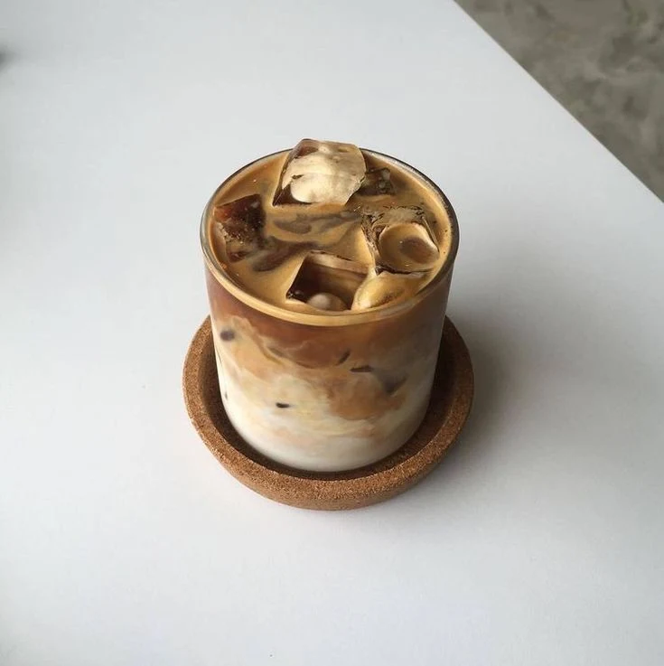

Iced Mocha Fusion Shake

Description
A delicious and cold 'milkshake' using a mocha flavored coffee mix. Try making your own and see just how simple it is!
Ingredients
- ¾ cup milk
- 1 teaspoon vanilla extract
- 3 tablespoons granulated sugar
- 3 tablespoons mocha flavored instant coffee mix
- 1 cup crushed ice
Steps
- In a blender or food processor, combine milk, vanilla, sugar, coffee powder and crushed ice.
- Blend until smooth.
- Pour into glasses and serve.